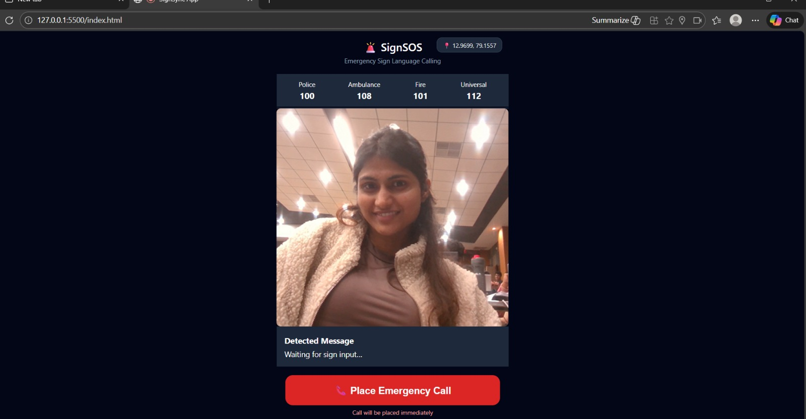
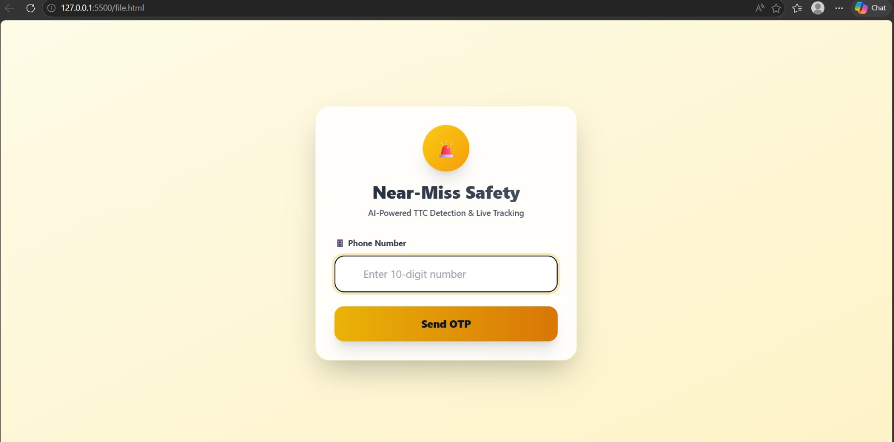

Shreya Shukla — Computer Science, VIT Vellore
Coding since the 6th grade. Powered by curiosity, IoT, and strong coffee.
From Circuits to Code: A Builder's Story
In the bustling corridors of VIT Vellore's School of Computing, one second-year student has quietly been rewriting the rules of what it means to be a developer. Shreya Shukla, specialising in the Internet of Things, approaches every problem with the methodical curiosity of an engineer and the restless imagination of an artist.
Her journey with code began not in a university lecture hall but at a school desk in sixth grade, when she first wondered why machines behaved the way they did — and what it would take to make them behave differently.
Today, that early fascination has matured into a broad technical portfolio spanning web development, AI and machine learning pipelines, and smart IoT architectures.
Hackathon Dispatches
Multiple competitive events attended. Each one a crash course in rapid prototyping and elegant problem decomposition under extreme pressure.
B.Tech CSE — IoT Specialisation
Vellore Institute of Technology · 2nd Year
Expected Graduation: 2027
✦ Internet of Things
✦ Web Development
✦ Artificial Intelligence
✦ Machine Learning


The workshop — where ideas become systems
Smart sensors, neural nets, and web interfaces: the trifecta of a modern builder.
Projects & Endeavours
Each project in Shreya's portfolio represents a distinct chapter — a new constraint, a new domain, a new set of questions she refused to leave unanswered.
IoT Smart Solutions
Sensor networks, embedded logic, and real-time dashboards bridging the physical and digital worlds.
Web Development
Full-stack interfaces and interactive experiences, built with an eye for both performance and aesthetic integrity.
AI & ML Explorations
From classification pipelines to intelligent automation — applied machine learning in service of human-centred problems.